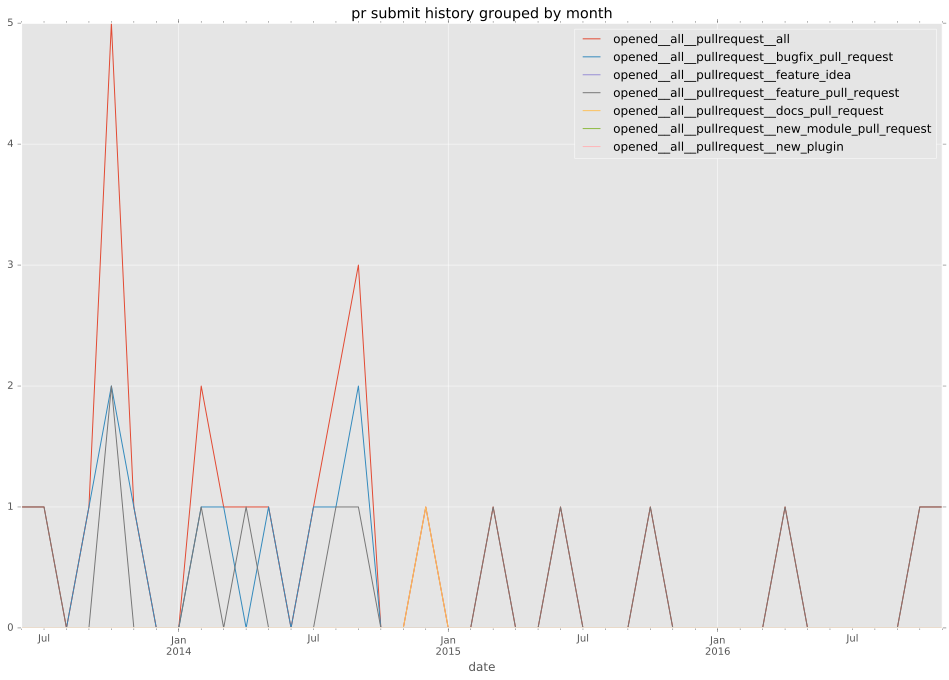

authors
maintainers
- banyek
contributors
- mattclay : 3 commits
- abadger : 3 commits
- mscherer : 4 commits
- sivel : 1 commits
- Jmainguy : 6 commits
- resmo : 3 commits
- adamchainz : 1 commits
- jctanner : 2 commits
- banyek : 20 commits
- mmoya : 6 commits
- jimi-c : 1 commits
total issue counts
bugfix pull request: 13
pullrequest: 25
feature pull request: 11
feature idea: 1
issue: 1
bug report: 1
issue history
pullrequest history

days open by issue type
feature pull request
count: 16
std: 69.7806085767
min: 0
max: 229
median: 38.0
mean: 69.0
all
count: 36
std: 85.2136623668
min: 0
max: 415
median: 2.0
mean: 44.0555555556
pullrequest
count: 0
std: nan
min: nan
max: nan
median: nan
mean: nan
bugfix pull request
count: 18
std: 11.499360596
min: 0
max: 49
median: 0.0
mean: 3.0
feature idea
count: 1
std: nan
min: 415
max: 415
median: 415.0
mean: 415.0
issue
count: 0
std: nan
min: nan
max: nan
median: nan
mean: nan
bug report
count: 1
std: nan
min: 13
max: 13
median: 13.0
mean: 13.0
closures grouped by total days open